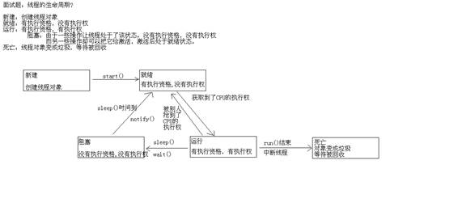

23进程.................................................................................................................................. 2
23.06java运行原理与jvm是多线程的吗......................................................................... 2
22.09线程的设置优先级................................................................................... 5
23.18 第一种方法模拟买票............................................................................ 9
23.19第二种线程方法模拟售票(第二种方法好一点）.................................................... 10
多线程同步的好处与弊端............................................................................... 13
24.01JKD5 之后的lock锁.............................................................................. 16
买票程序用锁修改：....................................................................................... 16
24.04生产者消费者代码的实现：................................................................. 18
24.11生产者消费者生产代码优化................................................................. 22
24.12线程池的使用与概述............................................................................. 24
24.14 Callable线程第三种方式（不要求太高掌握）................................... 25
24.14有返回值的第三种线程继承................................................................. 26
24.15匿名内部类的使用................................................................................. 27
24.16多线程的定时器的概述与运用（了解，以后会有专门的框架）..... 29
线程到此完事 ↑回到顶端......................................................................... 34
/*
* 进程：
* 正在运行的程序，是系统进行资源分配和调用的独立单位。
* 每一个进程都有它自己的内存空间和系统资源。
* 线程：
* 是进程中的单个顺序控制流，是一条执行路径
* 一个进程如果只有一条执行路径，则称为单线程程序。
* 一个进程如果有多条执行路径，则称为多线程程序。
*
* 举例：
* 扫雷程序，迅雷下载
*
* 大家注意两个词汇的区别：并行和并发。
* 前者是逻辑上同时发生，指在某一个时间内同时运行多个程序。
* 后者是物理上同时发生，指在某一个时间点同时运行多个程序。
*
* Java程序的运行原理：
* 由java命令启动JVM，JVM启动就相当于启动了一个进程。
* 接着有该进程创建了一个主线程去调用main方法。
*
* 思考题：
* jvm虚拟机的启动是单线程的还是多线程的?
* 多线程的。
* 原因是垃圾回收线程也要先启动，否则很容易会出现内存溢出。
* 现在的垃圾回收线程加上前面的主线程，最低启动了两个线程，所以，jvm的启动其实是多线程的。
*/
线程的提供方法
为什么要提供run方法呢？
/*
* 该类要重写run()方法,为什么呢?
* 不是类中的所有代码都需要被线程执行的。
* 而这个时候，为了区分哪些代码能够被线程执行，java提供了Thread类中的run()用来包含那些被线程执行的代码。
*/
线程调用：
/*
* 需求：我们要实现多线程的程序。
* 如何实现呢?
* 由于线程是依赖进程而存在的，所以我们应该先创建一个进程出来。
* 而进程是由系统创建的，所以我们应该去调用系统功能创建一个进程。
* Java是不能直接调用系统功能的，所以，我们没有办法直接实现多线程程序。
* 但是呢?Java可以去调用C/C++写好的程序来实现多线程程序。
* 由C/C++去调用系统功能创建进程，然后由Java去调用这样的东西，
* 然后提供一些类供我们使用。我们就可以实现多线程程序了。
* 那么Java提供的类是什么呢?
* Thread
* 通过查看API，我们知道了有2中方式实现多线程程序。
*
* 方式1：继承Thread类。
* 步骤
* A:自定义类MyThread继承Thread类。
* B:MyThread类里面重写run()?
* 为什么是run()方法呢?
* C:创建对象
* D:启动线程
* //
创建线程对象
// MyThread my = new
MyThread();
// // 启动线程
// my.run();
// my.run();
// 调用run()方法为什么是单线程的呢?
// 因为run()方法直接调用其实就相当于普通的方法调用,所以你看到的是单线程的效果
// 要想看到多线程的效果，就必须说说另一个方法：start()
// 面试题：run()和start()的区别?
// run():仅仅是封装被线程执行的代码，直接调用是普通方法
// start():首先启动了线程，然后再由jvm去调用该线程的run()方法。
// MyThread my = new
MyThread();
// my.start();
// //
IllegalThreadStateException:非法的线程状态异常
// // 为什么呢?因为这个相当于是my线程被调用了两次。而不是两个线程启动。
// my.start();
第一种线程方法：
MyThread 类:如下
public
class MyThread extends Thread {
public MyThread() {
}
public MyThread(String name){
super(name);
}
@Override
public void run() {
for (int x = 0; x <
100; x++) {
System.out.println(getName()
+ ":" + x);
}
}
}
然后定义测试类进行第一种线程方法的调用包括调用线程的名字，Mythread类中定义无参、有参构造方法，可以定义的时候赋值操作。
获取线程名字
简介
/*
* 如何获取线程对象的名称呢?
* public final String getName():获取线程的名称。
* 如何设置线程对象的名称呢?
* public final void setName(String name):设置线程的名称
*
* 针对不是Thread类的子类中如何获取线程对象名称呢?
* public static Thread currentThread():返回当前正在执行的线程对象
* Thread.currentThread().getName()
*/
23.09设置线程的优先级
有分时调度模型、抢占式调度模型java运用的是抢占式调用模型
演示如何设置和获取线程优先级
public
final int getPriority()
public
final void setPriority(int newPriority)
线程休眠
public
static void sleep(long millis)
线程加入
public
final void join()
线程礼让
public
static void yield()
后台线程
public
final void setDaemon(boolean on)
中断线程
public
final void stop()
public
void interrupt()
介绍：
Priority
/*
* 我们的线程没有设置优先级,肯定有默认优先级。
* 那么，默认优先级是多少呢?
* 如何获取线程对象的优先级?
* public
final int getPriority():返回线程对象的优先级
* 如何设置线程对象的优先级呢?
* public
final void setPriority(int newPriority)：更改线程的优先级。
*
* 注意：
* 线程默认优先级是5。
* 线程优先级的范围是：1-10。
* 线程优先级高仅仅表示线程获取的 CPU时间片的几率高，但是要在次数比较多，或者多次运行的时候才能看到比较好的效果。
*
* IllegalArgumentException:非法参数异常。
* 抛出的异常表明向方法传递了一个不合法或不正确的参数。
/*
* 线程休眠
* public
static void sleep(long millis)
* 注意1000毫秒=一秒
* 下面的代码写入自定义类当得Run方法当中
* try
{
Thread.sleep(1000);
} catch
(InterruptedException e) {
e.printStackTrace();
}
*/
* public final void join():等待该线程终止。
* 在测试类当中生成的自定义线程类的对象。main方法当中调用join方法等待该方法结束。
*
tj1.start();
try {
tj1.join();
} catch
(InterruptedException e) {
e.printStackTrace();
}
等待tj1结束在执行后面的
tj2.start();
/*
* public static void yield():暂停当前正在执行的线程对象，并执行其他线程。
* 让多个线程的执行更和谐，但是不能靠它保证一人一次。
* 再自定义类当中的Run方法中运用
* Thread.yield();
*/
介绍：如下
/*
* public final void setDaemon(boolean on):将该线程标记为守护线程或用户线程。
* 当正在运行的线程都是守护线程时，Java
虚拟机退出。
该方法必须在启动线程前调用。
* 游戏：坦克大战。//主线程结束之后其他两个线程也不能继续
*/
public class ThreadDaemonDemo {
public
static void main(String[] args) {
ThreadDaemon
td1 = new ThreadDaemon();
ThreadDaemon
td2 = new ThreadDaemon();
td1.setName("关羽");
td2.setName("张飞");
//
设置守护线程
td1.setDaemon(true);
td2.setDaemon(true);
td1.start();
td2.start();
Thread.currentThread().setName("刘备");
for
(int x = 0; x < 5; x++) {
System.out.println(Thread.currentThread().getName()
+ ":" + x);
}
}
}
自定义类：MyRunable.java
public
class MyRunnable implements Runnable {
@Override
public void run() {
for (int x = 0; x <
100; x++) {
// 由于实现接口的方式就不能直接使用Thread类的方法了,但是可以间接的使用
System.out.println(Thread.currentThread().getName()
+ ":" + x);
}
}
}
自定义测试类 MyRunnableDemo.java
/*
* 方式2：实现Runnable接口
* 步骤：
* A:自定义类MyRunnable实现Runnable接口
* B:重写run()方法
* C:创建MyRunnable类的对象
* D:创建Thread类的对象，并把C步骤的对象作为构造参数传递
*/
public
class MyRunnableDemo {
public static void main(String[]
args) {
// 创建MyRunnable类的对象
MyRunnable my = new
MyRunnable();
// 创建Thread类的对象，并把C步骤的对象作为构造参数传递
// Thread(Runnable
target)
// Thread t1 = new
Thread(my);
// Thread t2 = new
Thread(my);
// t1.setName("林青霞");
// t2.setName("刘意");
// Thread(Runnable
target, String name)
Thread t1 = new
Thread(my, "林青霞");
Thread t2 = new
Thread(my, "刘意");
t1.start();
t2.start();
}
}
线程为什么会有方式2 呢
实现接口方式的好处
可以避免由于Java单继承带来的局限性。
适合多个相同程序的代码去处理同一个资源的情况，把线程同程序的代码，数据有效分离，较好的体现了面向对象的设计思想。
先创建自定义线程类：SellTicket.java
public
class SellTicket extends Thread {
// 定义100张票
// private int tickets = 100;
// 为了让多个线程对象共享这100张票，我们其实应该用静态修饰
private static int tickets = 100;
@Override
public void run() {
// 定义100张票
// 每个线程进来都会走这里，这样的话，每个线程对象相当于买的是自己的那100张票，这不合理，所以应该定义到外面
// int tickets = 100;
// 是为了模拟一直有票
while (true) {
if (tickets
> 0) {
System.out.println(getName()
+ "正在出售第" + (tickets--) + "张票");
}
}
}
}
定义一个测试类：SellTicketDemo.java
/*
* 某电影院目前正在上映贺岁大片(红高粱,少林寺传奇藏经阁)，共有100张票，而它有3个售票窗口售票，请设计一个程序模拟该电影院售票。
* 继承Thread类来实现。
*/
public
class SellTicketDemo {
public static void main(String[]
args) {
// 创建三个线程对象
SellTicket st1 = new
SellTicket();
SellTicket st2 = new
SellTicket();
SellTicket st3 = new
SellTicket();
// 给线程对象起名字
st1.setName("窗口1");
st2.setName("窗口2");
st3.setName("窗口3");
// 启动线程
st1.start();
st2.start();
st3.start();
}
}
还是先创建Thread类对象:SellTicket.java
public
class SellTicket implements Runnable {
// 定义100张票
private int tickets = 100;
@Override
public void run() {
while (true) {
if (tickets
> 0) {
System.out.println(Thread.currentThread().getName()
+ "正在出售第"
+
(tickets--) + "张票");
}
}
}
}
第二自定义测试类 SellTicketDemo.java
/*
* 实现Runnable接口的方式实现
*/
public
class SellTicketDemo {
public static void main(String[]
args) {
// 创建资源对象
SellTicket st = new
SellTicket();
// 创建三个线程对象
Thread t1 = new
Thread(st, "窗口1");
Thread t2 = new
Thread(st, "窗口2");
Thread t3 = new
Thread(st, "窗口3");
// 启动线程
t1.start();
t2.start();
t3.start();
}
}
还是先创建SellTicket.java类：SellTicket.java
public
class SellTicket implements Runnable {
// 定义100张票
private int tickets = 100;
//创建锁对象
private Object obj = new Object();
// @Override
// public void run() {
// while (true) {
// synchronized(new
Object()){
// if
(tickets > 0) {
// try
{
// Thread.sleep(100);
// }
catch (InterruptedException e) {
// e.printStackTrace();
// }
// System.out.println(Thread.currentThread().getName()
+ "正在出售第"
// +
(tickets--) + "张票");
// }
// }
// }
// }
@Override
public void run() {
while (true) {
synchronized
(obj) {
if
(tickets > 0) {
try
{
Thread.sleep(100);
} catch (InterruptedException e)
{
e.printStackTrace();
}
System.out.println(Thread.currentThread().getName()
+
"正在出售第" + (tickets--) + "张票");
}
}
}
}
}
接下来创建测试类：SellTicketDemo.java
如下：
/*
* 如何解决线程安全问题呢?
*
* 要想解决问题，就要知道哪些原因会导致出问题:(而且这些原因也是以后我们判断一个程序是否会有线程安全问题的标准)
* A:是否是多线程环境
* B:是否有共享数据
* C:是否有多条语句操作共享数据
*
* 我们来回想一下我们的程序有没有上面的问题呢?
* A:是否是多线程环境 是
* B:是否有共享数据 是
* C:是否有多条语句操作共享数据 是
*
* 由此可见我们的程序出现问题是正常的，因为它满足出问题的条件。
* 接下来才是我们要想想如何解决问题呢?
* A和B的问题我们改变不了，我们只能想办法去把C改变一下。
* 思想：
* 把多条语句操作共享数据的代码给包成一个整体，让某个线程在执行的时候，别人不能来执行。
* 问题是我们不知道怎么包啊?其实我也不知道，但是Java给我们提供了：同步机制。
*
* 同步代码块：
* synchronized(对象){
* 需要同步的代码;
* }
*
* A:对象是什么呢?
* 我们可以随便创建一个对象试试。
* B:需要同步的代码是哪些呢?
* 把多条语句操作共享数据的代码的部分给包起来
* 注意：
* 同步可以解决安全问题的根本原因就在那个对象上。该对象如同锁的功能。
* 多个线程必须是同一把锁。
*/
public
class SellTicketDemo {
public static void main(String[]
args) {
// 创建资源对象
SellTicket st = new
SellTicket();
// 创建三个线程对象
Thread t1 = new
Thread(st, "窗口1");
Thread t2 = new
Thread(st, "窗口2");
Thread t3 = new
Thread(st, "窗口3");
// 启动线程
t1.start();
t2.start();
t3.start();
}
}
Private
Object obj;
Synchronized
(obj){
}
上锁所需要的代码：
* 同步的特点：
* 前提：
* 多个线程
* 解决问题的时候要注意：
* 多个线程使用的是同一个锁对象
* 同步的好处
* 同步的出现解决了多线程的安全问题。
* 同步的弊端
* 当线程相当多时，因为每个线程都会去判断同步上的锁，这是很耗费资源的，无形中会降低程序的运行效率。
*/
如下介绍：同步方法、与静态方法同步
/*
* A:同步代码块的锁对象是谁呢?
* 任意对象。
* B:同步方法的格式及锁对象问题?
* 把同步关键字加在方法上。
* private
static synchronized void sellTicket()
* 注意 private static int tickets =
100;
* 同步方法是谁呢?
* this
* @Override
// public void run() {
// while (true) {
// synchronized
(This) {}
*
* C:静态方法及锁对象问题?
* 静态方法的锁对象是谁呢?
* @Override
public void run() {
while (true) {
if(x%2==0){
synchronized
(SellTicket.class) {}...
* 类的字节码文件对象。(反射会讲)
*/
如下：
/*
* public final void stop():让线程停止，过时了，但是还可以使用。
* public void interrupt():中断线程。
把线程的状态终止，并抛出一个InterruptedException。
*/
public
class ThreadStopDemo {
public static void main(String[]
args) {
ThreadStop ts = new
ThreadStop();
ts.start();
// 你超过三秒不醒过来，我就干死你
try {
Thread.sleep(3000);
//
ts.stop();
ts.interrupt();
} catch
(InterruptedException e) {
e.printStackTrace();
}
}
}
一下是哪个线程停止方法
import
java.util.Date;
public
class ThreadStop extends Thread {
@Override
public void run() {
System.out.println("开始执行：" + new Date());
// 我要休息10秒钟，亲，不要打扰我哦
try {
Thread.sleep(10000);
} catch
(InterruptedException e) {
//
e.printStackTrace();
System.out.println("线程被终止了");
}
System.out.println("结束执行：" + new Date());
}
}

介绍如下
* 虽然我们可以理解同步代码块和同步方法的锁对象问题，但是我们并没有直接看到在哪里加上了锁，在哪里释放了锁，
* 为了更清晰的表达如何加锁和释放锁,JDK5以后提供了一个新的锁对象Lock。
*
* Lock：
* void
lock()： 获取锁。
* private
Lock lock = new ReentrantLock();
* try{
* lock.lock();
* }
* finally{
* lock.unlock();
* }
* void
unlock():释放锁。
* ReentrantLock是Lock的实现类.
1.先创建一个Mylock.java
如下：
public
class MyLock {
// 创建两把锁对象
public static final Object objA =
new Object();
public static final Object objB =
new Object();
}
2.再创建自己的一个线程类继承自Thread类的DieLock.java
如下：
public
class DieLock extends Thread {
private boolean flag;
public DieLock(boolean flag) {
this.flag = flag;
}
@Override
public void run() {
if (flag) {
synchronized
(MyLock.objA) {
System.out.println("if
objA");
synchronized
(MyLock.objB) {
System.out.println("if
objB");
}
}
} else {
synchronized
(MyLock.objB) {
System.out.println("else
objB");
synchronized
(MyLock.objA) {
System.out.println("else
objA");
}
}
}
}
}
3.定义一个测试类，重现可能的死锁情况 类为DieLockDemo.java
如下：
/*
* 同步的弊端：
* A:效率低
* B:容易产生死锁
*
* 死锁：
* 两个或两个以上的线程在争夺资源的过程中，发生的一种相互等待的现象。
*/
public
class DieLockDemo {
public static void main(String[]
args) {
DieLock dl1 = new
DieLock(true);
DieLock dl2 = new
DieLock(false);
dl1.start();
dl2.start();
}
}
1.创建获取资源类GetThread.java
public
class GetThread implements Runnable {
private Student s;
public GetThread(Student s) {
this.s = s;
}
@Override
public void run() {
while (true) {
synchronized
(s) {
if(!s.flag){
try
{
s.wait();
//t2就等待了。立即释放锁。将来醒过来的时候，是从这里醒过来的时候
}
catch (InterruptedException e) {
e.printStackTrace();
}
}
System.out.println(s.name
+ "---" + s.age);
//林青霞---27
//刘意---30
//修改标记
s.flag
= false;
//唤醒线程
s.notify();
//唤醒t1
}
}
}
}
2.创建生产资源类
SetThread.java
public
class SetThread implements Runnable {
private Student s;
private int x = 0;
public SetThread(Student s) {
this.s = s;
}
@Override
public void run() {
while (true) {
synchronized
(s) {
//判断有没有
if(s.flag){
try
{
s.wait();
//t1等着，释放锁
}
catch (InterruptedException e) {
e.printStackTrace();
}
}
if
(x % 2 == 0) {
s.name
= "林青霞";
s.age
= 27;
}
else {
s.name
= "刘意";
s.age
= 30;
}
x++;
//x=1
//修改标记
s.flag
= true;
//唤醒线程
s.notify();
//唤醒t2,唤醒并不表示你立马可以执行，必须还得抢CPU的执行权。
}
//t1有，或者t2有
}
}
}
3.Student资源类 Student.java
public class Student {
String name;
int age;
boolean flag; // 默认情况是没有数据，如果是true，说明有数据
}
4.创建测试类
StudentDemo.java
/*
* 分析：
* 资源类：Student
* 设置学生数据:SetThread(生产者)
* 获取学生数据：GetThread(消费者)
* 测试类:StudentDemo
*
* 问题1：按照思路写代码，发现数据每次都是:null---0
* 原因：我们在每个线程中都创建了新的资源,而我们要求的时候设置和获取线程的资源应该是同一个
* 如何实现呢?
* 在外界把这个数据创建出来，通过构造方法传递给其他的类。
*
* 问题2：为了数据的效果好一些，我加入了循环和判断，给出不同的值,这个时候产生了新的问题
* A:同一个数据出现多次
* B:姓名和年龄不匹配
* 原因：
* A:同一个数据出现多次
* CPU的一点点时间片的执行权，就足够你执行很多次。
* B:姓名和年龄不匹配
* 线程运行的随机性
* 线程安全问题：
* A:是否是多线程环境 是
* B:是否有共享数据 是
* C:是否有多条语句操作共享数据 是
* 解决方案：
* 加锁。
* 注意：
* A:不同种类的线程都要加锁。
* B:不同种类的线程加的锁必须是同一把。
*
* 问题3:虽然数据安全了，但是呢，一次一大片不好看，我就想依次的一次一个输出。
* 如何实现呢?
* 通过Java提供的等待唤醒机制解决。
*
* 等待唤醒：
* Object类中提供了三个方法：
* wait():等待
* notify():唤醒单个线程
* notifyAll():唤醒所有线程
* 为什么这些方法不定义在Thread类中呢?
* 这些方法的调用必须通过锁对象调用，而我们刚才使用的锁对象是任意锁对象。
* 所以，这些方法必须定义在Object类中。
*/
public class StudentDemo {
public static void main(String[] args) {
//创建资源
Student s = new Student();
//设置和获取的类
SetThread st = new SetThread(s);
GetThread gt = new GetThread(s);
//线程类
Thread t1 = new Thread(st);
Thread t2 = new Thread(gt);
//启动线程
t1.start();
t2.start();
}
}
方法里面定义怎么设置线程组
private
static void method2() {
// ThreadGroup(String
name)
ThreadGroup tg = new
ThreadGroup("这是一个新的组");
MyRunnable my = new
MyRunnable();
// Thread(ThreadGroup
group, Runnable target, String name)
Thread t1 = new
Thread(tg, my, "林青霞");
Thread
t2 = new Thread(tg, my, "刘意");
System.out.println(t1.getThreadGroup().getName());
System.out.println(t2.getThreadGroup().getName());
System.out.println(Thread.currentThread().getThreadGroup().getName());
//通过组名称设置后台线程，表示该组的线程都是后台线程
tg.setDaemon(true);
}
1.创建Studentl类
Student.java
public
class Student {
private String name;
private int age;
private boolean flag;
// 默认情况是没有数据，如果是true，说明有数据
public synchronized
void set(String name, int age) {
// 如果有数据，就等待
if (this.flag) {
try {
this.wait();
} catch
(InterruptedException e) {
e.printStackTrace();
}
}
// 设置数据
this.name = name;
this.age = age;
// 修改标记
this.flag = true;
this.notify();
}
public synchronized void get() {
// 如果没有数据，就等待
if (!this.flag) {
try {
this.wait();
} catch
(InterruptedException e) {
e.printStackTrace();
}
}
// 获取数据
System.out.println(this.name
+ "---" + this.age);
// 修改标记
this.flag = false;
this.notify();
}
}
2.类的重新编写SetThread.java
public class SetThread implements Runnable {
private Student s;
private int x = 0;
public SetThread(Student s) {
this.s = s;
}
@Override
public void run() {
while (true) {
if (x % 2 == 0) {
s.set("林青霞", 27);
} else {
s.set("刘意", 30);
}
x++;
}
}
}
3.重写GetThread.java
public class GetThread implements Runnable {
private Student s;
public GetThread(Student s) {
this.s = s;
}
@Override
public void run() {
while (true) {
s.get();
}
}
}
4.重写StudentDemo.java 类
public class StudentDemo {
public static void main(String[] args) {
//创建资源
Student s = new Student();
//设置和获取的类
SetThread st = new SetThread(s);
GetThread gt = new GetThread(s);
//线程类
Thread t1 = new Thread(st);
Thread t2 = new Thread(gt);
//启动线程
t1.start();
t2.start();
}
}
代码的优化已经结束
1创建线程对象.MyRunnable.java
public class MyRunnable implements Runnable {
@Override
public void run() {
for (int x = 0; x < 100; x++) {
System.out.println(Thread.currentThread().getName() + ":" + x);
}
}
}
2.测试类ExecurtorsDemo.java
import
java.util.concurrent.ExecutorService;
import
java.util.concurrent.Executors;
/*
* 线程池的好处：线程池里的每一个线程代码结束后，并不会死亡，而是再次回到线程池中成为空闲状态，等待下一个对象来使用。
*
* 如何实现线程的代码呢?
* A:创建一个线程池对象，控制要创建几个线程对象。
* public
static ExecutorService newFixedThreadPool(int nThreads)
* B:这种线程池的线程可以执行：
* 可以执行Runnable对象或者Callable对象代表的线程
* 做一个类实现Runnable接口。
* C:调用如下方法即可
* Future<?>
submit(Runnable task)
* <T>
Future<T> submit(Callable<T> task)
* D:我就要结束，可以吗?
* 可以。
*/
public
class ExecutorsDemo {
public static void main(String[] args) {
// 创建一个线程池对象，控制要创建几个线程对象。
// public static ExecutorService
newFixedThreadPool(int nThreads)
ExecutorService pool =
Executors.newFixedThreadPool(2);
// 可以执行Runnable对象或者Callable对象代表的线程
pool.submit(new MyRunnable());
pool.submit(new MyRunnable());
//结束线程池
pool.shutdown();
}
}
1.定义MyCallable.java
2.测试类
CallableDemo.java
import
java.util.concurrent.ExecutorService;
import
java.util.concurrent.Executors;
/*
* 多线程实现的方式3：
* A:创建一个线程池对象，控制要创建几个线程对象。
* public
static ExecutorService newFixedThreadPool(int nThreads)
* B:这种线程池的线程可以执行：
* 可以执行Runnable对象或者Callable对象代表的线程
* 做一个类实现Runnable接口。
* C:调用如下方法即可
* Future<?>
submit(Runnable task)
* <T>
Future<T> submit(Callable<T> task)
* D:我就要结束，可以吗?
* 可以。
*/
public
class CallableDemo {
public static void main(String[] args) {
//创建线程池对象
ExecutorService pool =
Executors.newFixedThreadPool(2);
//Executors 执行者
//可以执行Runnable对象或者Callable对象代表的线程
pool.submit(new MyCallable());
pool.submit(new MyCallable());
//结束
pool.shutdown();
}
}
1.创建一个线程类：MyCallable.java
import
java.util.concurrent.Callable;
/*
* 线程求和案例
*/
public class MyCallable implements Callable<Integer> {
private int number;
public MyCallable(int number) {
this.number = number;
}
@Override
public Integer call() throws Exception {
int sum = 0;
for (int x = 1; x <= number; x++) {
sum += x;
}
return sum;
}
}
2.创建测试类 CallableDemo.java
import
java.util.concurrent.ExecutionException;
import
java.util.concurrent.ExecutorService;
import
java.util.concurrent.Executors;
import
java.util.concurrent.Future;
/*
* 多线程实现的方式3：
* A:创建一个线程池对象，控制要创建几个线程对象。
* public static
ExecutorService newFixedThreadPool(int nThreads)
* B:这种线程池的线程可以执行：
* 可以执行Runnable对象或者Callable对象代表的线程
* 做一个类实现Runnable接口。
* C:调用如下方法即可
* Future<?>
submit(Runnable task)
* <T>
Future<T> submit(Callable<T> task)
* D:我就要结束，可以吗?
* 可以。
*/
public class CallableDemo {
public
static void main(String[] args) throws InterruptedException, ExecutionException
{
//
创建线程池对象
ExecutorService
pool = Executors.newFixedThreadPool(2);
//
可以执行Runnable对象或者Callable对象代表的线程
Future<Integer>
f1 = pool.submit(new MyCallable(100));
Future<Integer>
f2 = pool.submit(new MyCallable(200));
//
V get()
Integer
i1 = f1.get();
Integer
i2 = f2.get();
System.out.println(i1);
System.out.println(i2);
//
结束
pool.shutdown();
}
}
1.
ThreadDemo.java
/*
* 匿名内部类的格式：
* new
类名或者接口名() {
* 重写方法;
* };
* 本质：是该类或者接口的子类对象。
*/
public
class ThreadDemo {
public static void main(String[]
args) {
// 继承Thread类来实现多线程
new Thread() {
public void
run() {
for
(int x = 0; x < 100; x++) {
System.out.println(Thread.currentThread().getName()
+ ":"
+
x);
}
}
}.start();
// 实现Runnable接口来实现多线程
new Thread(new
Runnable() {
@Override
public void
run() {
for (int x = 0; x
< 100; x++) {
System.out.println(Thread.currentThread().getName()
+ ":"
+
x);
}
}
})
{
}.start();
// 更有难度的
new Thread(new
Runnable() {
@Override
public void
run() {
for
(int x = 0; x < 100; x++) {
System.out.println("hello"
+ ":" + x);
}
}
}) {
public void
run() {
for
(int x = 0; x < 100; x++) {
System.out.println("world"
+ ":" + x);
}
}
}.start();
}
}
第三种方法开发不会遇到，但是面试可能会问你报错不报错
如下调用：
import java.util.Timer;
import
java.util.TimerTask;
/*
* 定时器：可以让我们在指定的时间做某件事情，还可以重复的做某件事情。
* 依赖Timer和TimerTask这两个类：
* Timer:定时
* public Timer()
* public void schedule(TimerTask task,long delay)
* public void schedule(TimerTask task,long delay,long period)
* public void cancel()
* TimerTask:任务
*/
public class TimerDemo {
public static void main(String[] args) {
// 创建定时器对象
Timer t = new Timer();
// 3秒后执行爆炸任务
// t.schedule(new MyTask(), 3000);
//结束任务
t.schedule(new MyTask(t), 3000);
}
}
// 做一个任务
class MyTask extends TimerTask {
private Timer t;
public MyTask(){}
public MyTask(Timer t){
this.t = t;
}
@Override
public void run() {
System.out.println("beng,爆炸了");
t.cancel();
}
}
import java.util.Timer;
import
java.util.TimerTask;
/*
* 定时器：可以让我们在指定的时间做某件事情，还可以重复的做某件事情。
* 依赖Timer和TimerTask这两个类：
* Timer:定时
* public Timer()
* public void schedule(TimerTask task,long delay)
* public void schedule(TimerTask task,long delay,long period)
* public void cancel()
* TimerTask:任务
*/
public class TimerDemo2 {
public static void main(String[] args) {
// 创建定时器对象
Timer t = new Timer();
// 3秒后执行爆炸任务第一次，如果不成功，每隔2秒再继续炸
t.schedule(new MyTask2(), 3000,
2000);
}
}
// 做一个任务
class MyTask2 extends TimerTask {
@Override
public void run() {
System.out.println("beng,爆炸了");
}
}
案例：
import java.io.File;
import
java.text.ParseException;
import
java.text.SimpleDateFormat;
import java.util.Date;
import java.util.Timer;
import
java.util.TimerTask;
/*
* 需求：在指定的时间删除我们的指定目录(你可以指定c盘，但是我不建议，我使用项目路径下的demo)
*/
class DeleteFolder extends TimerTask {
@Override
public void run() {
File srcFolder = new File("demo");
deleteFolder(srcFolder);
}
// 递归删除目录
public void deleteFolder(File srcFolder) {
File[] fileArray = srcFolder.listFiles();
if (fileArray != null) {
for (File file : fileArray) {
if (file.isDirectory()) {
deleteFolder(file);
} else {
System.out.println(file.getName() + ":" + file.delete());
}
}
System.out.println(srcFolder.getName() + ":" + srcFolder.delete());
}
}
}
public class TimerTest {
public static void main(String[] args) throws ParseException {
Timer t = new Timer();
String s = "2014-11-27 15:45:00";
SimpleDateFormat sdf = new SimpleDateFormat("yyyy-MM-dd HH:mm:ss");
Date d = sdf.parse(s);
t.schedule(new DeleteFolder(), d);
}
}
面向对象思想设计原则
设计模式
设计模式的分类
常见的设计模式
简单工厂模式和工厂方法模式(接口)
模版设计模式(抽象类)
装饰设计模式(IO流)
单例设计模式(多线程)
适配器模式(GUI)
细分：
饿汉式：代码如下：
public class Student {
// 构造私有
private Student() {
}
// 自己造一个
// 静态方法只能访问静态成员变量，加静态
// 为了不让外界直接访问修改这个值，加private
private static Student s = new Student();
// 提供公共的访问方式
// 为了保证外界能够直接使用该方法，加静态
public static Student getStudent() {
return s;
}
}
如下：
/*
* 单例模式：
* 饿汉式：类一加载就创建对象
* 懒汉式：用的时候，才去创建对象
*
* 面试题：单例模式的思想是什么?请写一个代码体现。
*
* 开发：饿汉式(是不会出问题的单例模式)
* 面试：懒汉式(可能会出问题的单例模式)
* A:懒加载(延迟加载)
* B:线程安全问题
* a:是否多线程环境 是
* b:是否有共享数据 是
* c:是否有多条语句操作共享数据 是
*/
public class Teacher {
private Teacher() {
}
private static Teacher t = null;
public synchronized static Teacher getTeacher() {
// t1,t2,t3
if (t == null) {
//t1,t2,t3
t = new Teacher();
}
return t;
}
}
24.26单例模式的RunTime实列运用
import
java.io.IOException;
/*
* Runtime:每个 Java 应用程序都有一个 Runtime 类实例，使应用程序能够与其运行的环境相连接。
* exec(String
command)
*/
public class RuntimeDemo {
public static void main(String[] args) throws IOException {
Runtime r = Runtime.getRuntime();
// r.exec("winmine");//
// r.exec("notepad");//记事本
// r.exec("calc");//计算器
// r.exec("shutdown
-s -t 10000");//两小时关机
r.exec("shutdown -a");//取消关机
}
}
线程阶段的两到面试题
23.08线程
23.08 run与start的区别
如下 面试题：run()和start()的区别? // run():仅仅是封装被线程执行的代码，直接调用是普通方法 // start():首先启动了线程，然后再由jvm去调用该线程的run()方法。 2017.3.27 定时任务多次执行
24.线程常见面试题
25.1:多线程有几种实现方案，分别是哪几种? 26. 两种。 27. 28. 继承Thread类 29. 实现Runnable接口 30. 31. 扩展一种：实现Callable接口。这个得和线程池结合。 32. 33.2:同步有几种方式，分别是什么? 34. 两种。 35. 36. 同步代码块 37. 同步方法 38. 39.3:启动一个线程是run()还是start()?它们的区别? 40. start(); 41. 42. run():封装了被线程执行的代码,直接调用仅仅是普通方法的调用 43. start():启动线程，并由JVM自动调用run()方法 44. 45.4:sleep()和wait()方法的区别 46. sleep():必须指时间;不释放锁。 47. wait():可以不指定时间，也可以指定时间;释放锁。 48. 49.5:为什么wait(),notify(),notifyAll()等方法都定义在Object类中 50. 因为这些方法的调用是依赖于锁对象的，而同步代码块的锁对象是任意锁。 51. 而Object代码任意的对象，所以，定义在这里面。 52. 53.6:线程的生命周期图 54. 新建 -- 就绪 -- 运行 -- 死亡 55. 新建 -- 就绪 -- 运行 -- 阻塞 -- 就绪 -- 运行 -- 死亡 56. 建议：画图解释。 24.25 单列设计模式
/* * 单例模式： * 饿汉式：类一加载就创建对象 * 懒汉式：用的时候，才去创建对象 * * 面试题：单例模式的思想是什么?请写一个代码体现。 * * 开发：饿汉式(是不会出问题的单例模式) * 面试：懒汉式(可能会出问题的单例模式) * A:懒加载(延迟加载) * B:线程安全问题 * a:是否多线程环境 是 * b:是否有共享数据 是 * c:是否有多条语句操作共享数据 是 */ |
|
1:多线程(理解) (1)多线程：一个应用程序有多条执行路径 进程：正在执行的应用程序 线程：进程的执行单元，执行路径 单线程：一个应用程序只有一条执行路径 多线程：一个应用程序有多条执行路径
多进程的意义? 提高CPU的使用率 多线程的意义? 提高应用程序的使用率 (2)Java程序的运行原理及JVM的启动是多线程的吗? A:Java命令去启动JVM，JVM会启动一个进程，该进程会启动一个主线程。 B:JVM的启动是多线程的，因为它最低有两个线程启动了，主线程和垃圾回收线程。 (3)多线程的实现方案(自己补齐步骤及代码 掌握) A:继承Thread类 B:实现Runnable接口 (4)线程的调度和优先级问题 A:线程的调度 a:分时调度 b:抢占式调度 (Java采用的是该调度方式) B:获取和设置线程优先级 a:默认是5 b:范围是1-10 (5)线程的控制(常见方法) A:休眠线程 B:加入线程 C:礼让线程 D:后台线程 E:终止线程(掌握) (6)线程的生命周期(参照 线程生命周期图解.bmp) A:新建 B:就绪 C:运行 D:阻塞 E:死亡 (7)电影院卖票程序的实现 A:继承Thread类 B:实现Runnable接口 (8)电影院卖票程序出问题 A:为了更符合真实的场景，加入了休眠100毫秒。 B:卖票问题 a:同票多次 b:负数票 (9)多线程安全问题的原因(也是我们以后判断一个程序是否有线程安全问题的依据) A:是否有多线程环境 B:是否有共享数据 C:是否有多条语句操作共享数据 (10)同步解决线程安全问题 A:同步代码块 synchronized(对象) { 需要被同步的代码; }
这里的锁对象可以是任意对象。
B:同步方法 把同步加在方法上。
这里的锁对象是this
C:静态同步方法 把同步加在方法上。
这里的锁对象是当前类的字节码文件对象(反射再讲字节码文件对象) (11)回顾以前的线程安全的类 A:StringBuffer B:Vector C:Hashtable D:如何把一个线程不安全的集合类变成一个线程安全的集合类 用Collections工具类的方法即可。 |
|
1:多线程(理解) (1)JDK5以后的针对线程的锁定操作和释放操作 Lock锁 (2)死锁问题的描述和代码体现 (3)生产者和消费者多线程体现(线程间通信问题) 以学生作为资源来实现的
资源类：Student 设置数据类：SetThread(生产者) 获取数据类：GetThread(消费者) 测试类：StudentDemo
代码： A:最基本的版本，只有一个数据。 B:改进版本，给出了不同的数据，并加入了同步机制 C:等待唤醒机制改进该程序，让数据能够实现依次的出现 wait() notify() notifyAll() (多生产多消费) D:等待唤醒机制的代码优化。把数据及操作都写在了资源类中 (4)线程组 (5)线程池 (6)多线程实现的第三种方案 (7)多线程的面试题 2:设计模式(理解) (1)面试对象的常见设计原则 单一 开闭 里氏 依赖注入 接口 迪米特 (2)设计模式概述和分类 A:经验的总结 B:三类 创建型 结构型 行为型 (3)改进的设计模式 A:简单工厂模式 B:工厂方法模式 C:单例模式(掌握) a:饿汉式 b:懒汉式 (4)Runtime JDK提供的一个单例模式应用的类。 还可以调用dos命令。
|
Day线程进程概述
|
1:要想了解多线程，必须先了解线程，而要想了解线程，必须先了解进程，因为线程是依赖于进程而存在。 2:什么是进程? 通过任务管理器我们就看到了进程的存在。 而通过观察，我们发现只有运行的程序才会出现进程。 进程：就是正在运行的程序。 进程是系统进行资源分配和调用的独立单位。每一个进程都有它自己的内存空间和系统资源。
3:多进程有什么意义呢? 单进程的计算机只能做一件事情，而我们现在的计算机都可以做多件事情。 举例：一边玩游戏(游戏进程)，一边听音乐(音乐进程)。 也就是说现在的计算机都是支持多进程的，可以在一个时间段内执行多个任务。 并且呢，可以提高CPU的使用率。
问题： 一边玩游戏，一边听音乐是同时进行的吗? 不是。因为单CPU在某一个时间点上只能做一件事情。 而我们在玩游戏，或者听音乐的时候，是CPU在做着程序间的高效切换让我们觉得是同时进行的。
4:什么是线程呢? 在同一个进程内又可以执行多个任务，而这每一个任务我就可以看出是一个线程。 线程：是程序的执行单元，执行路径。是程序使用CPU的最基本单位。 单线程：如果程序只有一条执行路径。 多线程：如果程序有多条执行路径。
5:多线程有什么意义呢? 多线程的存在，不是提高程序的执行速度。其实是为了提高应用程序的使用率。 程序的执行其实都是在抢CPU的资源，CPU的执行权。 多个进程是在抢这个资源，而其中的某一个进程如果执行路径比较多，就会有更高的几率抢到CPU的执行权。 我们是不敢保证哪一个线程能够在哪个时刻抢到，所以线程的执行有随机性。 |